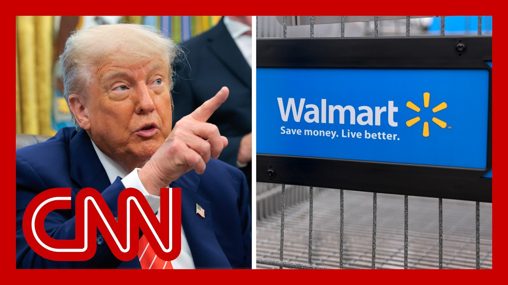

【特朗普对沃尔玛喊话：“吞下关税”，不要转嫁给顾客】
Summary: President Trump warns Walmart against raising prices due to tariffs, as the retail giant faces tough choices between absorbing costs or passing them to consumers amid economic uncertainty.
摘要： 特朗普总统警告沃尔玛不要因关税而涨价，因这家零售巨头在经济不确定性中面临吸收成本或转嫁给消费者的艰难选择。

⏱️ Estimated Reading Time: 15 min
President Trump a short time ago, telling Walmart that the company should now eat the cost and quote of higher tariffs.
不久前，特朗普总统告诉沃尔玛，该公司现在应该承担更高的关税成本。
The comments come after the retail giant said this week that it would raise prices because of Trump's tariffs being too high.
此前，这家零售巨头本周表示，由于特朗普的关税过高，它将提高价格。
Walmart has more than 4600 stores in the US.
沃尔玛在美国拥有4600多家门店。
It's also the biggest private employer in the country with 1.6 million workers.
它也是美国最大的私营雇主，拥有160万名员工。
Several countries that supply Walmart include China, and they're facing tariffs between 10 and 30% right now.
为沃尔玛供货的几个国家包括中国，它们目前正面临10%至30%的关税。
Augusta Saraiva is a reporter for Bloomberg News and she has been writing about this.
奥古斯塔·萨拉伊瓦是彭博新闻社的记者，她一直在报道此事。
Great to see you, Augusta.
很高兴见到你，奥古斯塔。
So President Trump is warning Walmart not to pass the tariffs on to the consumer.
因此，特朗普总统警告沃尔玛不要将关税转嫁给消费者。
after Walmart has announced that it would have to do that.
此前沃尔玛已宣布将不得不这样做。
Is it possible for Walmart to back down on what it thinks is the reality for them?
沃尔玛有可能在其认为的现实面前退缩吗？
Thank you for having me.
谢谢邀请。
Well, it's a tough choice not only for Walmart, but for a lot of businesses out there, right.
嗯，这不仅对沃尔玛来说是一个艰难的选择，对许多企业来说也是如此。
Because what Walmart has been saying is that they will try to keep prices as low as possible for as long as possible.
因为沃尔玛一直表示，他们将尽可能长时间地保持低价。
But the thing is that they have a tough choice to make right?
但问题是他们必须做出艰难的选择，对吧？
As they start seeing higher tariffs, they have to choose between keeping that demand at a time when consumer sentiment is going down, at a time when people are starting to feel, jittery about the economy and protecting their margins.
随着关税的提高，他们必须在消费者情绪下降、人们对经济感到不安的时候保持需求与保护利润率之间做出选择。
So we could we could see them back to back down at some point.
因此，我们可能会看到他们在某个时候退缩。
But, that might not be the case.
但这可能不会发生。
That's a terrorist story to make their way across the economy.
这是一个在经济中蔓延的恐怖故事。
So what does this potentially mean for the millions of Americans who do shop at Walmart, and other retailers who import a lot of their products from China and other countries that are indeed facing higher tariffs?
那么，这对数百万在沃尔玛购物的美国人以及其他从中国等面临更高关税的国家进口大量产品的零售商意味着什么？
Yeah, that essentially means that after years of high inflation, at the same time that consumers are also seeing high borrowing costs, right?
是的，这基本上意味着在多年高通胀之后，消费者同时面临高借贷成本，对吧？
Those credit card rate, they could see even higher prices.
信用卡利率可能导致他们面临更高的价格。
so for consumers it's a matter of making choices, right?
因此，对消费者来说，这是一个做出选择的问题，对吧？
So if prices start to go up at a fast rate, they might start to pull back on some other things like vacations, for example.
因此，如果价格开始快速上涨，他们可能会减少其他开支，比如度假。
Right.
没错。
And we are starting to see people feel, feel a little, less inclined to buy non-essentials at this point.
而且我们现在开始看到人们不太愿意购买非必需品。
Yeah.
是的。
And among the consumers, who are likely to be hardest hit.
在消费者中，低收入群体可能受到最严重的打击。
In this case, of course, it's low income consumers, right?
当然，在这种情况下是低收入消费者，对吧？
They're the ones that have been bearing the brunt, of inflation for a long time.
他们是长期承受通胀压力的人。
But at the same time, we know that tariffs there's lots of research on that.
但与此同时，我们知道有很多关于关税的研究。
We know that tariffs tend to hit, low income consumers harder, right.
我们知道关税往往对低收入消费者的打击更大，对吧。
Because they impact everyone just the same.
因为它们对每个人的影响是一样的。
So if you make laws, that's that's a bigger chunk of your income that's going toward those extra costs.
因此，如果你的收入较低，那么这些额外成本将占你收入的更大比例。
So for low income consumers who have been seeing higher prices for a while, the labor market is still strong where wage gains are not, growing at the same rate that we did see in the past few years.
因此，对于长期面临价格上涨的低收入消费者来说，劳动力市场仍然强劲，但工资增长并未达到过去几年的水平。
This could be another challenge for them.
这对他们来说可能是另一个挑战。
And as for Walmart, I mean, what does this tell you?
至于沃尔玛，你觉得这意味着什么？
That Walmart is making this kind of pronouncement, you know, ahead of time?
沃尔玛提前做出这样的声明？
I mean, or or giving a warning to consumers, what is its objective?
或者说向消费者发出警告，其目的是什么？
Yeah, first of all, they don't want to shock the consumer.
是的，首先，他们不想让消费者感到震惊。
Right?
对吧？
So by doing that, they don't want to see, people going out there, like we saw at the start of the pandemic and buying lots of toilet paper, when prices do go up.
因此，他们不希望看到人们在价格上涨时像疫情初期那样抢购大量卫生纸。
Right.
没错。
So they're trying to warn the consumer that this is coming so that people can prepare ahead of time.
因此，他们试图警告消费者即将发生的情况，以便人们提前做好准备。
you could infer that they're trying to send a message to the White House, right?
你可以推断他们试图向白宫传递一个信息，对吧？
We know that big box retailers like Walmart, Target, Home Depot, they have met with President Trump, in the past month.
我们知道，沃尔玛、塔吉特、家得宝等大型零售商在过去一个月里与特朗普总统会面。
So that's also a way for them to to tell the president, look, we're thinking of raising prices, but there is a way for us not to do so.
因此，这也是他们告诉总统的一种方式：我们正在考虑涨价，但也有可能不这样做。
All right.
好吧。
We'll leave it there for now.
我们暂时到此为止。
Augusta Saraiva, great to see you.
奥古斯塔·萨拉伊瓦，很高兴见到你。
Thanks so much.
非常感谢。
Thanks for having me.
谢谢邀请。
President Trump is sending one of America's biggest retailers a warning, telling Walmart it should, quote, eat tariffs and not raise prices on its consumers.
特朗普总统向美国最大的零售商之一发出警告，告诉沃尔玛应该“吞下关税”，不要对消费者涨价。
That post, coming in response to the company's CEO announcing it has no option but to raise prices due to the president's tariffs on China.
此前，该公司首席执行官宣布，由于总统对中国的关税政策，除了涨价别无选择。
And joining us now, Jack Buffington.
现在加入我们的是杰克·巴芬顿。
He's a professor of supply chain management at the University of Denver.
他是丹佛大学供应链管理教授。
Jack, you are the perfect person to talk to about all of this.
杰克，你是讨论这一切的完美人选。
Let's just start first with is it possible financially for Walmart and these other companies to absorb the cost of these tariffs?
首先，沃尔玛和其他公司是否有可能在财务上吸收这些关税成本？
Hi, Jessica.
你好，杰西卡。
As someone who used to work for one of Walmart's suppliers, I know how hard they work to keep prices down.
作为曾经为沃尔玛供应商工作的人，我知道他们为保持低价付出了多少努力。
So let me give you a little math here.
让我给你算一笔账。
So the tariffs that so first off, about a third of Walmart's products are subject to tariffs.
首先，沃尔玛约三分之一的产品受到关税影响。
Tariffs used to be about 1% on a on the average of all the countries is probably going to go up to about 10 to 15%.
过去平均关税约为1%，现在可能升至10%至15%。
Their net profit margin is less than 3%.
他们的净利润率不到3%。
So if they eat these tariffs they will actually lose money.
因此，如果他们吞下这些关税，实际上会亏损。
So Walmart will figure it out.
因此，沃尔玛会想办法。
Companies like Amazon I'll figure it out.
亚马逊等公司也会想办法。
Some of those other retailers that are really going to struggle.
但其他一些零售商将面临真正的困难。
But even a giant, inefficient giant like Walmart has a very difficult time absorbing these tariffs.
但即使是沃尔玛这样效率低下的巨头，也很难吸收这些关税。
Yeah.
是的。
And we've gotten new data from the University of Michigan.
我们刚刚拿到了密歇根大学的新数据。
Their survey on consumer sentiment.
他们的消费者情绪调查。
It's now at the second lowest point on record for the month of April.
4月份的数据是历史上第二低的。
Were you surprised by this?
你对此感到惊讶吗？
I don't think I was very surprised by that.
我并不感到非常惊讶。
just a couple of weeks before the consumer price index came down low, which was seen as good news, but I see it as a softening of consumer demand.
就在几周前，消费者价格指数下降，这被视为好消息，但我认为这是消费者需求疲软的表现。
And I think all the uncertainty that's happening in the supply chain, we also need to understand that a lot of people are not just consumers in the supply chain.
我认为供应链中的所有不确定性，我们还需要理解许多人不仅是供应链中的消费者。
They're also workers in the supply chain that this is leading to some uncertainty that is softening consumer demand.
他们也是供应链中的工人，这导致了一些不确定性，从而削弱了消费者需求。
I also want to ask you about the fact that we've seen these ports all along the West Coast looking pretty empty after China halted all its shipping to the U.S..
我还想问你，在中国停止向美国发货后，我们看到西海岸的港口相当空旷。
so is is big retailers that's already dealing with, just like the financial impact of tariffs.
因此，大型零售商已经在应对关税的财务影响。
Now you actually have the physical impact about the merchandise, but also these smaller businesses, so many small businesses that make up the United States economy.
现在你实际上还有商品的物理影响，以及构成美国经济的许多小企业。
What does it mean for for both of these types of retailers?
这对这两种类型的零售商意味着什么？
First off, just to mention what's going on in the ports, as you may recall, in April there was a surge of all the, the ports, the containers going through the ports.
首先，提到港口的情况，你可能记得4月份港口集装箱吞吐量激增。
And then in May it goes back down, you the -35%.
然后在5月份下降了35%。
And now it's going to surge back up again in June is where the third quarter is.
现在6月份将再次激增，因为第三季度即将到来。
Peak season for all the holidays.
这是所有节日的旺季。
So what's happening in supply chains when you have this up and down is you lose capacity and you lose efficiency, which means the ports can ship less, higher prices.
因此，供应链在这种波动中会失去容量和效率，这意味着港口吞吐量减少，价格上涨。
And you know, you mentioned Walmart companies like that are going to do just fine.
你知道，你提到的沃尔玛等公司会没事。
It's the small guys that are going to really experience and challenge of getting product supply and the prices that they're going to be able to offer their consumers.
真正面临产品供应和价格挑战的是小企业。
So again, I think in these circumstances, the big guys are going to be able to compete.
因此，我认为在这种情况下，大企业将能够竞争。
that are going to be punished.
小企业将受到惩罚。
Eat the tariffs.
吞下关税。
That's the message tonight from President Trump to Walmart, after the company warned it would have to raise prices because of the president's tariff war with China, the president demanded Walmart eat the tariffs and not pass higher prices on to customers, adding, quote, I'll be watching.
这是特朗普总统今晚对沃尔玛的喊话，此前该公司警告称，由于总统与中国的关税战，它将不得不提高价格。总统要求沃尔玛吞下关税，不要将更高的价格转嫁给客户，并补充说：“我会盯着。”
Gene Seroka is joining us now.
现在加入我们的是吉恩·塞罗卡。
He's a global trade expert.
他是全球贸易专家。
He's also the executive director of the Port of Los Angeles.
他还是洛杉矶港的执行董事。
Last week, there were no cargo ships entering the port from China.
上周，没有来自中国的货船进入该港口。
have things changed with the easing of these tariffs?
随着关税的放宽，情况是否有所改变？
How would you say things are now?
你认为现在情况如何？
Good evening.
晚上好。
Jessica.
杰西卡。
Nice to see you.
很高兴见到你。
So the month of May, we'll have 17 of 80 scheduled sailings canceled coming to Los Angeles.
因此，5月份，我们将有80班计划航行中的17班取消前往洛杉矶。
Now, the balance of those will have some port calls in China, but most are impacting that import cargo flow coming from China.
其余的将在中国停靠，但大多数会影响来自中国的进口货流。
So it's going to be a fairly light month for us.
因此，这对我们来说将是一个相当轻松的月份。
Now as we talk about what happens closer to home on the docks, that means fewer job opportunities for longshoremen and truck drivers, warehouse workers as well.
现在，当我们谈论码头附近的情况时，这意味着码头工人、卡车司机和仓库工人的工作机会减少。
And so what does this mean? more broadly, two for the store shelves, beyond just the port, what would be coming into the country and being sold in stores?
那么，这对商店货架更广泛的影响是什么？除了港口，还有什么会进入该国并在商店销售？
Jessica, we're cutting it real close on some seasonal products.
杰西卡，我们在一些季节性产品上时间非常紧迫。
Summer fashion, back to school, Halloween and May is typically the month where importers place orders to factories in Asia for the all important Christmas and year end holiday season.
夏季时装、返校季、万圣节，而5月通常是进口商向亚洲工厂下订单的重要圣诞和年终假日季节。
Not knowing exactly what price or quantity to buy right now is the bigger part of the questioning.
现在不知道确切的价格或购买数量是更大的问题。
Yeah for sure.
确实如此。
And listen, I think there's also just this bigger issue, which is regardless of what happens, it's not just flipping a switch to get things back to normal.
而且，我认为还有一个更大的问题，那就是无论发生什么，恢复正常并非一蹴而就。
there is some lag time right there.
这需要一些滞后时间。
Is that can that can take some time?
这是否需要一些时间？
That's right.
没错。
We've seen over the past few days bookings or reservations for shipments tick up just a little bit.
过去几天，我们看到货运预订量略有上升。
We've gone a few weeks with cargo that's already been manufactured and sitting in China, and now importers are trying to scoop some of that up.
几周来，已经制造并滞留在中国